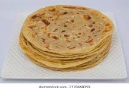

Chapati recipe
Back to home

Chapati is a type of unleavened flatbread originating from the Indian subcontinent. It is made from whole wheat flour and water, and is typically cooked on a hot griddle.
Ingredients
- 2 cups whole wheat flour
- 1/2 teaspoon salt
- 3/4 cup water (or as needed)
- 1 tablespoon oil (optional)
- Extra flour for dusting
Steps
- In a large bowl, mix the whole wheat flour and salt.
- Add water gradually and knead to form a soft dough. If using, add oil while kneading.
- Cover the dough with a damp cloth and let it rest for at least 30 minutes.
- Divide the dough into small balls (about the size of a golf ball).
- On a floured surface, roll out each ball into a thin circle.
- Heat a griddle or skillet over medium-high heat. Cook each chapati for about 30 seconds on each side, or until brown spots appear.
- Serve hot with your favorite curry or vegetable dish.
- Enjoy your homemade chapati!